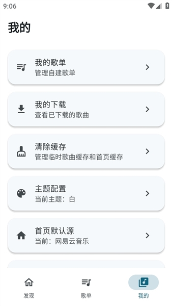

摩比音乐藏得真深！翻到底朝天才挖到这 5 个没人注意的功能
你以为摩比音乐只是个聚合搜歌播放器？其实它内置了音源切换、歌单搬家、无损下载、批量限制、无广告设计等一堆官方不宣传的隐藏玩法。
你以为摩比音乐就是个「把 QQ 网易云酷我一锅端」的聚合播放器？说实话我一开始也这么想——从下载装好，搜几首歌听听，音质不错界面干净，就这样用了小半年。直到前几天闲得慌翻设置菜单，一层一层点进去，才发现这 App 藏的东西真不少，而且没有一个在官网首页显眼处提过。
今天就把我挖到的这几个私藏功能全抖出来，有些是冷门入口，有些是版本迭代后悄悄加的，还有一个连老用户都在问「真的假的」——
一、音源线路一键切换：不是换频道，是换整锅菜
最让我惊喜的第一个隐藏功能，就是那个看起来不起眼的「音源切换器」。
摩比音乐默认走网易云线路，首页热歌榜也是网易云的。但你有没有想过——一首歌在网易云搜不到，不代表在 QQ 音乐也搜不到？版权壁垒这个事儿，大厂之间互相掐得凶，对用户来说就是「我想听的歌你家没有，他家却有」。
摩比音乐的解法是：同时接入了至少六条音源线路——QQ 音乐、网易云、酷我、阿哔、tunefree、naiy，还有需要单独导入的洛雪源。在搜索结果页的右上角，或者播放页的同一位置，都藏着一个小小的下拉框或三点菜单，点开就是音源选择器。
| 场景 | 怎么用 |
|---|---|
| 搜索结果里某首歌显示不可用 | 切另一条线，大概率能搜到 |
| 想听 FLAC 无损但默认线路只有 128k | 换 tunefree 或洛雪，可能解锁更高音质 |
| 播放一直转圈加载不出来 | 切线路比重启 App 快多了 |
| 歌词不全或根本没有 | 不同线路的歌词完整度不一样，总能找到带的 |

说实话这个功能官方几乎没宣传过——搜索结果页顶部那个小开关，新用户大概率不会注意到。但它是整个 App 「聚合」二字的真正灵魂所在。
二、批量下载的音源限制：洛雪源为啥能 200 首无上限
这是个版本迭代后悄悄加的规则，藏在 v1.4.3 的更新日志里，大多数人根本没翻到。
不同音源线路对批量下载的数量限制不一样，我做了张表：
| 音源线路 | 批量下载上限 |
|---|---|
| 洛雪源（需单独导入） | 无限制 |
| tunefree / naiy | 放宽到 20 首 |
| 阿哔源 | 仍有限制 |
| 其他线路 | 较严格 |
这意味着什么？如果你经常想整张专辑或者长歌单一把梭，洛雪源是必须导入的。导入之后没有批量限制，200 首歌一起下都没问题。tunefree 和 naiy 虽然也放宽到了 20 首，但比起洛雪还是差一截。
洛雪源怎么导入？App 里找「设置」→「音源管理」或类似的入口，按照文档给的链接添加就行——过程有点像手动配置，没有一键导入那么傻瓜，但搞定之后是真的香。
三、歌单跨平台搬家：五分钟把网易云全部家当搬过来
这个功能藏在「歌单页右上角菜单 → 导入歌单」里，文档倒是有写，但新用户几乎不会主动想到去找。
完整流程是这样的：
- 在网易云打开你要搬的歌单，点分享复制链接，从链接里抠出那串数字 ID
- 回到摩比音乐的歌单页，点右上角菜单选「导入歌单」，把链接或 ID 粘进去
- App 自动识别是网易云的，开始抓取歌单内容
- 等进度条走完，新歌单就出现在列表里了
一个 50 首的歌单大概 1 分钟搞定，200 首的长歌单可能要 3-5 分钟。导入完成后别忘了核对一下：歌曲总数对不对、有没有显示「找不到」的（说明聚合线路里没有这首）、顺序和原歌单一致吗。
导入只是「引用」——歌单里的歌默认还是在线播放。想离线听就批量下载整张歌单，或者长按多选全部收藏。
踩过的坑：歌单 ID 有时候是带前缀的字符串，有时候是纯数字。如果粘进去没反应，试试只粘数字部分。另外，导入失败的歌别等它自动重试，手动搜一下找不到的那几首补上就行。

四、FLAC 24bit 无损：你的设备配得上吗
摩比音乐支持四档音质免费下载，从 128k MP3 到 FLAC 24bit 高采样率无损——全档免费，没有任何会员门槛。
| 档位 | 格式 | 典型场景 |
|---|---|---|
| 128k | MP3 | 通勤外放、蓝牙耳机省流量 |
| 320k | MP3 | 手机扬声器、普通入耳 |
| FLAC | 无损压缩 | 有线耳机、家庭音响 |
| FLAC 24bit | 高采样无损 | Hi-Fi 设备、发烧友 |
但这里有个容易忽略的点：不同音源线路支持的最高音质不一样。tunefree 或洛雪源可能有 FLAC 24bit，而某条备用源可能只有 128k。想下载高音质，先切音源再点下载。
再说说存储：一首 FLAC 大概 30-50MB，FLAC 24bit 可能 80-120MB，比 320k MP3（约 8-10MB）大了好几倍。通勤党别盲目追无损，手机扬声器或百元蓝牙耳机根本听不出 320k 和 FLAC 的区别——省点空间给别的 App 不好吗？
五、为什么真的没广告：v1.4.0 之后彻底干净
这个算隐藏功能吗？不算，但很多人不知道它是真的没有任何广告。
早期 v1.2.x 和 v1.3.x 版本有开屏广告，v1.4.0 开始彻底移除了。我翻了用户反馈和公开资料，确认现在的版本：
- 开屏广告：没有
- 信息流/推荐页广告：没有
- 插屏广告：没有
- 播放页广告：没有
- 通知栏推送广告：没有
- 合作推广：没有
为什么能做到？开发者是第三方团队，没有大厂那种变现压力。开屏广告的 SDK 集成虽然能快速赚点小钱，但也增加了代码复杂度和稳定性风险——去掉它反而让 App 更轻更稳。
避坑提醒：极少数第三方魔改版可能还带广告。判断方法很简单——官方原版的包名通常是 com.mobimusic、com.gsdok.gsd_civil_pp.mobimusic 或 com.change.lly.mobi.music。如果包名不一样，大概率是魔改的。另外，版本号一定要在 v1.4.0 或之后，旧版本可能还有偶发广告。
踩过的坑，提前说
说了五个隐藏功能，再提几个容易踩的雷区：
音源切换后播放短暂卡顿：正常现象，等 2-3 秒让线路重连就好。如果还不行，确认一下网络连接是不是稳定——部分线路对弱网容忍度较低。
歌单导入后顺序乱了：有时候是线路抓取的问题，重新导入一次通常能解决。
下载速度慢：先切音源（不同线路服务器速度差很多），再检查网络（Wi-Fi 比 4G/5G 稳定）。批量下载的话记得切到洛雪源。
App 下线了歌单全丢怎么办：开 WebDAV 云同步，定期备份歌单。聚合线路随时可能变或消失，真正想听的歌下载到本地才是最稳的。
用了小半年摩比音乐，从「只是个聚合播放器」到「原来还能这样玩」，最大的感受就是——好东西不一定在最显眼的地方。音源切换、歌单搬家、无损下载、批量限制调整、无广告设计，每一个单独拿出来都值得拎出来好好讲讲，但官方就是不把它们摆在首页。
可能第三方开发者的风格就是这样吧：默默把功能做好，能被人发现就算赚到了。那我就当一个「挖宝人」，把这些藏得深的东西一个个拎出来——毕竟，能把一个工具用透，才对得起下载它的那份心思。
官方仓库在 GitHub、Gitee、GitCode 三个平台都同步有，从文档目录里能看到完整的开发记录和版本迭代轨迹，想深入了解的话哪个仓库顺手就上哪个。